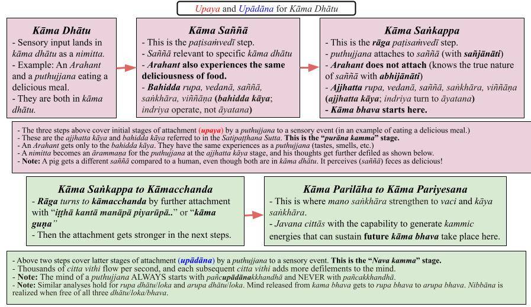

Upaya is the first stage of attachment of a mind to a sensory input. If the initial attachment is strong, it will keep attaching with the subsequent "upādāna" step. A nimitta (sensory input) becomes an ārammaṇa (attached sensory input) when getting to the upādāna step.
November 11, 2023; revised February 26, 2024; September 26,2024

Print/Download: "Upaya and Upādāna."
Difference Between Kāma Dhātu and Kāma Bhava
1. The Buddha described this difference in the "Sanidāna Sutta (SN 14.12)": "Kāmadhātuṁ, bhikkhave, paṭicca uppajjati kāmasaññā, kāmasaññaṁ paṭicca uppajjati kāmasaṅkappo, kāmasaṅkappaṁ paṭicca uppajjati kāmacchando, kāmacchandaṁ paṭicca uppajjati kāmapariḷāho, kāmapariḷāhaṁ paṭicca uppajjati kāmapariyesanā." OR "Attachment to kāma dhātu leads to kāma saññā, attachment to kāma saññā leads to kāma saṅkappa, attachment to kāma saṅkappa leads to kāmacchanda..and so on to kāma pariyesanā."
- That verse explains why Arahants and Anagmis also have kāma saññā. That step does not involve "rāga, dosa, moha," or "san" (alternatively written as "sañ" or“saṅ” ). Here, "kāma" does not refer to "assada" (or "placing a value on sensual pleasures") but only to be associated with "kāma loka." This is discussed below.
- But Arahants' minds don't go through the rest of the steps in that verse: kāma saṅkappa, kāmacchanda, kāmapariḷāha, kāmapariyesanā. Kammic energies are generated in these steps.
- However, the mind of anyone below the Arahant/Anāgāmi stages may attach and automatically generate kāma saṅkappa. That is the "upaya" step.
2. If that ārammaṇa is strong enough, the mind may keep attaching to it repeatedly (remember that thousands of citta vithi run through a mind in a second), leading to kāmacchanda, kāmapariḷāha, kāmapariyesanā.That is the "upādāna" step.
- Strong attachment starts at the kāmacchanda stage; then, the mind becomes agitated and wants to pursue the ārammaṇa urgently (kāma pariḷāha); then it starts thinking, speaking, and doing things seeking maximum pleasure (or avoiding any hindrance) at the kāma pariyesanā stage (here, pariyesanā means "to investigate/actively engage.")
- The above chart summarizes those steps and points to key concepts (like ajjhatta kāya/bahidda kāya, purāna kamma/nava kamma, etc. that we will discuss in upcoming posts. Please print this chart and have it ready when reading any post in this section.
- Critical Point (added on September 26, 2024): All sensory inputs trigger a mind to go through the "upaya stage" (boxes in red in the above chart), which is the same as the "purāna kamma stage." However, unless a mind attaches further at the kāmacchanda step, it will NOT get to the "upādāna stage" (boxes in blue in the above chart), which is the same as the "nava kamma stage" and generate potent kamma via vaci and kāya saṅkhāra. Also, see "Purāna and Nava Kamma – Sequence of Kamma Generation."
3. "Attachment to kāma dhātu" in the above verse does not imply "attachment with a defiled mind" but rather a consequence of still living with a "human body," i.e., "living in the human realm." Dhātu is usually an entity's "barebone" initial state.
- That can be easily explained with the concept of bhavaṅga. A living Arahant is still with the "uppatti bhavaṅga" (or the "natural state of mind") that they were born with human birth. When exposed to a sensory input (ārammaṇa), a citta vithi flows starting with that "uppatti bhavaṅga," and the initial saññā arises according to that "uppatti bhavaṅga." See “Bhava and Bhavaṅga – Simply Explained!“
- Those unfamiliar with the concept of bhavaṅga do not need to worry. Just keep this fact in mind that while Arahants are in kāma dhātu (with “kāma saññā”), they are NOT in kāma bhava. They are free of all three bhava (kāma, rupa, and arupa.)
- It is a good idea to examine the sequence of events in mind upon receiving sensory input. A sensory input "before attachment" is a nimitta.
An Arahant Is in Kāma Dhātu but Not Kāma Bhava
4. An Arahant has been released from all three bhava: kāma bhava (or kāma loka with 11 realms), rupa bhava (or rupa loka with 16 rupāvacara Brahma realms), and arupa bhava (or arupa loka with the 4 arupāvacara Brahma realms.)
- However, an Arahant was born into the kāma bhava (human realm); thus, until the death of the physical body, he has to live in "kāma dhātu." That means living in the kāma loka (human realm) without generating "san" (rāga, dosa, moha).
- When a sensory input comes in for any living being, the mind starts in one of the three bhava/lokās. A human's or an animal's mind starts at the corresponding uppatti bhavaṅga state (in the kāma dhātu) in which they were born. A rupāvacara Brahma's mind will start at corresponding uppatti bhavaṅga (in rupa bhava), etc.
Kāma Dhātu to Kāma Bhava Transition Requires a Kamma (Saṅkappa)
5. Generating "kāma saññā" at this initial "kāma dhātu stage" does not mean one is already in the "kāma bhava." Generating "kāma saññā" happens just before kāma bhava while in the "kāma dhātu" stage. An Arahant's mind does not go beyond the "kāma dhātu" stage; even though it experiences “kāma saññā” it does attach to it and generate kāma saṅkappa. A kamma (with defiled intention or sañcetanā) must happen (i.e., must generate kāma saṅkappa) to get to the kāma bhava, as the Buddha explained in the "Paṭhamabhava Sutta (AN 3.76)."
- The "Paṭhamabhava Sutta (AN 3.76)" states “Kāmadhātuvepakkañca, ānanda, kammaṁ nābhavissa, api nu kho kāmabhavo paññāyethā”ti?" OR “If no kamma took place (kammaṁ nābhavissa), would the transition from kāma dhātu to kāma bhava come about?” The answer was "no."
- That kamma happens in the "kāmasaññaṁ paṭicca uppajjati kāmasaṅkappo" step in #1 above. As we know, kamma is done with (abhi)saṅkhāra and "saṅkappa" means "citta saṅkhāra."
- As the verse in #1 shows, "kāma saṅkappa" arises (kāma saññaṁ paṭicca uppajjati kāma saṅkappo) in the second step. Let us carefully go through the steps involved.
Kāma Dhātu to Kāma Bhava = Nimitta to Ārammaṇa
6. A nimitta (sensory input) COULD trigger rāga, dosa, or moha in the mind according to the types of anusaya/saṁyojana associated with that mind. If that nimitta is grasped/embraced, it becomes "nimittaggāhī hoti" and is an ārammaṇa.
- An Arahant's mind will not latch onto a nimitta ("na nimittaggāhī hoti.") Anyone below the Arahant stage may or may not grasp a nimitta, depending on the nimitta and one's remaining anusaya/saṁyojana.
- The key to stop "grabbing hold of defiled nimitta" is to gradually ease up on one's tendency to attach to sensory inputs. That is cultivating moral discipline or "indriya saṁvara." See, "Saṁvara Sutta (AN 4.14)."
7. When a nimitta (sensory input) comes in, the mind breaks loses from the uppatti bhavaṅga (or the "temporary bhavaṅga") and instantaneously attaches to the nimitta if at least one saṁyojana makes it possible.
- Since Arahant's mind is devoid of any saṁyojana, it will not grasp ANY nimitta.
- We can get a good indication of possible attachment by looking at the type of vedanā generated by the nimitta.
Only Bodly Vedanā Are "Real" - Others Are "Mind-Made"
8. As discussed in #6 of the post, "Contamination of a Human Mind – Detailed Analysis," only bodily feelings (sārīrika vēdanā) are real vedanā felt by the physical body. Those are the sukha and dukkha vedanā that even the Buddha experienced.
- The other sense doors cannot cause bodily sukha and dukkha vedanā. They come in as "adukkhamasukkha (neither sukha nor dukkha)" vedanā.
- The above facts are pretty clear in Abhidhamma; all sense doors other than the physical body (i.e., eyes, ears, nose, tongue, mind) initially generate adukkhamasukha vedanā (Ref. 1).
- A nimitta coming through the other sense doors can generate various types of saññā depending on the realm, and those give rise to somanassa (mind-made pleasant) and domanassa (mind-made unpleasant) vedanā.
- For example, a human will experience a horrible taste and a foul smell of rotting meat. For pigs, it is the other way around! Both taste and smell are generated purely with saññā. However, both humans and pigs experience the same dukkha vedanā upon being injured. Only bodily contact leads to real dukkha and sukha vedanā.
- The minds of different beings in different realms in the kāma loka are naturally built to generate various types of "saññā" according to the "gati" corresponding to that realm. Thus, the saññā of a pig and that of a human for rotting meat or feces is exactly the opposite. A pig would generate somanassa vedanā, and a human would generate domanassa vedanā. An Arahant will have the same unpleasant saññā for rotting meat (as an average human) but will not generate domanassa vedanā. Furthermore, an Arahant will experience the physical dukkha vedanā from an injury but will not generate domanassa vedanā because of it (unlike an average human.)
Nimitta Turning to an Ārammaṇa
9. Based on ANY sensory input and the uppatti bhavaṅga, a mind will start at a particular DEFILED STATE (with mano saṅkhāra) unless one is an Arahant. Even if an average human may not strongly attach to a sense input, "distorted saññā" is automatically generated; the reason is not realizing the anicca nature, but we will discuss that later.
- Therefore, any mind (other than that of an Arahant) will be somewhat contaminated, even from the beginning, due to wrong views and defiled saññā associated with that mind. Thus, the "suffering-free pure mind" (pabhassara citta) ALWAYS remains hidden. I had discussed this in a separate section earlier and have extracted relevant posts to "Recovering the Suffering-Free Pure Mind" under the main section "Is There a “Self”?"
- In other words, any attachment is to pancupadanakkhandha and NEVER to pancakkhandha.
- The sequence of events after a sensory input becomes an ārammaṇa has been discussed in "Sensory Experience – Basis of Buddhā’s Worldview " (Extracted from “Origin of Life“)
- In the current new subsection, "Sensory Experience – A Deeper Analysis" we discuss how a nimitta becomes an ārammaṇa (It is the same as the "kāma dhātu" to "kāma bhava" transition.)
- It is a good idea to follow the flow in the re-arranged main section, "Is There a “Self”?"
10. I discussed some of the concepts in this post in the subsection "Recovering the Suffering-Free Pure Mind." In particular, see "Contamination of a Human Mind – Detailed Analysis."
- I have revised the main chart in that post slightly to follow the discussion above.
Download/Print: "Contamination of Mind from Kāma Dhātu Stage - 2."
Upaya Means "Birth" in Kāma, Rupa, or Arupa Bhava
11. The 31 realms in this world are divided into three "bhava" or existences: kāma bhava, rupa bhava, and arupa bhava.
- The mind of anyone born in the kāma bhava is generally "triggered" by sensory input in kāma dhātu. Thus, even an Arahant's mind starts at the kāma dhātu stage (which is free of defilements.) Only after attaching to a sensory input with "defiled saññā" does a mind reach the "kāma bhava" stage.
- In another example, a rupāvacara Brahma's mind starts at the "rupa dhātu" stage. Only after getting attached to "defiled rupa saññā" does it get to the "rupa bhava."
- Similarly, arupāvacara Brahma's mind starts at the "arupa dhātu" stage. Only after getting attached to "defiled arupa saññā" does it get to the "arupa bhava."
- That is clearly stated in the "Paṭhamabhava Sutta (AN 3.76)"
12. Furthermore, within each bhava, one will get into one's unique "bhava" according to the "gati" (or "uppatti bhavaṅga") one is born with.
- For example, if we consider a human and a pig, both are in kāma bhava. However, they have very different gati (or "uppatti bhavaṅga.")
- Therefore, upon seeing a pile of feces, a pig's mind automatically gets a "likable saññā," and a "somanassa (mind-made joyful) vedanā" arises.
- An Arahant and a puthujjana (average human) were born in the "human bhava." Therefore, upon seeing the same pile of feces, "unpleasant saññā" arises in both. However, a "domanassa (mind-made distressful) vedanā" arises ONLY in the average human, whose mind automatically dislikes the pile of feces. Even though the Arahant was born in the human bhava, he/she does not belong to the "human bhava" or any "bhava." Thus, no "attachment with somanassa or domanassa" happens to the Arahant.
- In other words, while Arahant's mind reaches the "kāma dhātu" stage, it will never reach "kāma bhava."
- I repeated that to make sure I got the point across. Understanding these concepts is critical if one wants to fully understand the Satipaṭṭhana Sutta and also have a deeper understanding of saññā vipallāsa and anicca nature.
References
1. “Bhikkhu_Bodhi-Comprehensive_Manual_of_Abhidhamma,” by Bhikkhu Bodhi (2000); pdf file can be downloaded (click the link to open the pdf). See Chapter III on p. 114. Here, only sukha and dukkha vedanā are generated via the physical body. All others lead to somanassa and domanassa vedanā created by the mind arising from saññā. That latter part may not be explicitly stated there.
Upaya é o primeiro estágio do apego da mente a um estímulo sensorial. Se o apego inicial for forte, ele continuará se aprofundando na etapa subsequente, chamada “Upādāna”. Um Nimitta (estímulo sensorial) torna-se um Ārammaṇa (estímulo sensorial ao qual há apego) ao atingir a etapa de Upādāna.
11 de novembro de 2023; revisado em 26 de fevereiro de 2024; 26 de setembro de 2024
Imprimir/Baixar: “Upaya e Upādāna”.
Diferença entre Kāma Dhātu e Kāma Bhava
1. O Buddha descreveu essa diferença no “Sanidāna Sutta (SN 14.12)”: “Kāmadhātuṁ, bhikkhave, em função de kāmadhātu surge kāmasaññā; em função de kāmasaññaṁ surge kāmasaṅkappo; em função de kāmasaṅkappaṁ surge kāmacchando, kāmacchandaṁ Paṭicca surge kāmapariḷāho, kāmapariḷāhaṁ Paṭicca surge kāmapariyesanā.” OU “O apego ao Dhātu Kāma leva à Saññā de kāma; o apego à Saññā de kāma leva ao saṅkappa de kāma; o apego ao saṅkappa de kāma leva ao kāmacchanda...e assim por diante até Kāma pariyesanā.”
- Esse versículo explica por que os Arahants e os Anagmis também possuem kāma Saññā. Essa etapa não envolve “rāga, dosa, moha” ou “san” (também escrito como “sañ” ou “saṅ”). Aqui, “Kāma” não se refere a “assada” (ou “atribuir valor aos prazeres sensuais”), mas apenas à associação com “Kāma Loka”. Isso é discutido a seguir.
- Mas as mentes dos Arahants não passam pelas demais etapas desse versículo: kāma saṅkappa, kāmacchanda, kāmapariḷāha, kāmapariyesanā. As energias de Kamma são geradas nessas etapas.
- No entanto, a mente de qualquer pessoa abaixo dos estágios de Arahant/Anāgāmi pode se apegar e gerar automaticamente kāma saṅkappa. Essa é a etapa “upaya”.
2. Se esse Ārammaṇa for forte o suficiente, a mente pode continuar se apegando a ele repetidamente (lembre-se de que milhares de Citta vithi passam pela mente em um segundo), levando a kāmacchanda, kāmapariḷāha, kāmapariyesanā.Essa é a etapa “Upādāna”.
- O apego forte começa no estágio de kāmacchanda; então, a mente fica agitada e deseja perseguir o Ārammaṇa com urgência (kāma pariḷāha); em seguida, ela começa a pensar, falar e agir buscando o máximo prazer (ou evitando qualquer obstáculo) no estágio de Kāma pariyesanā (aqui, pariyesanā significa “investigar/envolver-se ativamente”).
- O gráfico acima resume essas etapas e aponta conceitos-chave (como ajjhatta Kāya/bahidda Kāya, purāna Kamma/nava Kamma, etc.), que discutiremos em ensaios futuros. Imprima este gráfico e tenha-o à mão ao ler qualquer ensaio desta seção.
- Ponto Crítico (adicionado em 26 de setembro de 2024): Todos os estímulos sensoriais levam a mente a passar pelo “estágio de upaya” (caixas em vermelho no gráfico acima), que é o mesmo que o “estágio de purāna Kamma”. No entanto, a menos que a mente se apegue ainda mais na etapa de kāmacchanda, ela NÃO chegará ao “estágio de Upādāna” (caixas em azul no quadro acima), que é o mesmo que o “estágio de nava kamma”, nem gerará Kamma potente por meio de vaci e Kāya Saṅkhāra. Veja também “Purāna e Nava Kamma – Sequência de Geração de Kamma”.
3. O “apego ao Dhātu de Kāma” no versículo acima não implica “apego com uma mente contaminada”, mas sim uma consequência de ainda se viver com um “corpo humano”, ou seja, “viver no reino humano”. Dhātu é geralmente o estado inicial “essencial” de uma entidade.
- Isso pode ser facilmente explicado com o conceito de Bhavaṅga. Um Arahant vivo ainda se encontra no “uppatti Bhavaṅga” (ou o “estado natural da mente”) com o qual nasceu como ser humano. Quando exposto a um estímulo sensorial (Ārammaṇa), um Citta vithi flui a partir desse “Bhavaṅga”, e a Saññā inicial surge de acordo com esse “Bhavaṅga”. Veja “Bhava e Bhavaṅga – Explicado de forma simples!”
- Quem não estiver familiarizado com o conceito de Bhavaṅga não precisa se preocupar. Basta ter em mente este fato: embora os Arahants estejam no kāma Dhātu (com “Kāma Saññā”), eles NÃO estão no kāma Bhava. Eles estão livres de todos os três Bhava (Kāma, Rūpa e Arupa).
- É uma boa ideia examinar mentalmente a sequência de eventos ao receber um estímulo sensorial. Um estímulo sensorial “antes do apego” é um Nimitta.
Um Arahant está no Kāma Dhātu, mas não no Kāma Bhava
4. Um Arahant foi liberado dos três Bhava: kāma Bhava (ou Kāma Loka com 11 reinos), rupa Bhava (ou Rupa Loka com 16 reinos Brahmā rupāvacara) e arupa Bhava (ou arupa Loka com os 4 reinos Brahmā arupāvacara).
- No entanto, um Arahant nasceu no kāma bhava (reino humano); assim, até a morte do corpo físico, ele precisa viver no “kāma Dhātu”. Isso significa viver no Kāma Loka (reino humano) sem gerar “san” (Rāga, Dosa, Moha).
- Quando um estímulo sensorial chega a qualquer ser vivo, a mente inicia em um dos três bhava/lokās. A mente de um ser humano ou de um animal inicia no estado Uppatti Bhava correspondente (no Kāma Dhātu) no qual nasceu. A mente de um Brahmā rupāvacara começará no Uppatti Bhava correspondente (no Rūpa Bhava), etc.
A transição do kāma dhātu para o kāma bhava requer um Kamma (saṅkappa)
5. Gerar “kāma Saññā” nesse “estágio inicial do kāma Dhātu” não significa que a pessoa já esteja no “kāma Bhava”. A geração de “kāma Saññā” ocorre imediatamente antes do kāma Bhava, enquanto se está no estágio “kāma Dhātu”. A mente de um Arahant não vai além do estágio “kāma dhātu”; embora experimente “kāma saññā”, ela não se apega a ela nem gera kāma saṅkappa. É necessário que ocorra um Kamma (com intenção impura ou sañcetanā) — ou seja, que gere kāma saṅkappa — para se chegar ao kāma bhava, conforme explicou o Buddha no “Paṭhamabhava Sutta (AN 3.76)”.
- O “Paṭhamabhava Sutta (AN 3.76)” afirma: “Kāmadhātuvepakkañca, ānanda, kammaṁ nābhavissa, api nu kho kāmabhavo paññāyethā”ti?” OU “Se nenhum kamma tivesse ocorrido (kammaṁ nābhavissa), a transição do kāma Dhātu para o kāma Bhava teria ocorrido?” A resposta foi “não”.
- Esse Kamma ocorre na etapa “kāmasaññaṁ Paṭicca uppajjati kāmasaṅkappo” no item 1 acima. Como sabemos, o Kamma é realizado por meio de (abhi)Saṅkhāra, e “saṅkappa” significa “Citta Saṅkhāra”.
- Conforme mostra o verso no nº 1, “kāma saṅkappa” surge (kāma saññaṁ Paṭicca uppajjati kāma saṅkappo) na segunda etapa. Vamos examinar cuidadosamente as etapas envolvidas.
Kāma Dhātu para Kāma Bhava = Nimitta para Ārammaṇa
6. Nimitta (estímulo sensorial) PODE desencadear Rāga, Dosa ou Moha na mente, de acordo com os tipos de Anusaya/saṁyojana associados a essa mente. Se esse Nimitta for captado/abraçado, ele se torna “nimittaggāhī hoti” e é um Ārammaṇa.
- A mente de um Arahant não se apega a um nimitta (“na nimittaggāhī hoti”). Qualquer pessoa abaixo do estágio de Arahant pode ou não se apegar a um nimitta, dependendo do nimitta e dos Anusaya/saṁyojana remanescentes.
- A chave para deixar de “agarrar-se a Nimitta contaminados” é diminuir gradualmente a tendência de se apegar aos estímulos sensoriais. Isso é cultivar a disciplina moral ou “Indriya saṁvara”. Veja “Saṁvara Sutta (AN 4.14)”.
7. Quando um Nimitta (estímulo sensorial) surge, a mente se desliga do uppatti Bhavaṅga (ou do “Bhavaṅga temporário”) e instantaneamente se apega ao Nimitta, caso pelo menos um saṁyojana torne isso possível.
- Como a mente do Arahant está desprovida de qualquer saṁyojana, ela não se apegará a NENHUM Nimitta.
- Podemos ter uma boa indicação de um possível apego observando o tipo de Vedanā gerado pelo Nimitta.
Apenas as Vedanā corporais são “reais” — as demais são “criadas pela mente”
8. Conforme discutido no ponto 6 da postagem “Contaminação da mente humana – Análise detalhada”, apenas as sensações corporais (sārīrika vēdanā) são Vedanā reais, sentidas pelo corpo físico. Essas são as Vedanā de Sukha e Dukkha que até mesmo o Buddha experimentou.
- As outras portas sensoriais não podem causar Vedanā corporais de Sukha e Dukkha. Elas se manifestam como Vedanā “adukkhamasukkha (nem Sukha nem Dukkha)”.
- Os fatos acima estão bastante claros no Abhidhamma; todas as portas sensoriais, exceto o corpo físico (ou seja, olhos, ouvidos, nariz, língua, mente), geram inicialmente Vedanā adukkhamasukha (Ref. 1).
- Um Nimitta que chega pelas outras portas sensoriais pode gerar vários tipos de Saññā, dependendo do reino, e esses dão origem a Vedanā de somanassa (prazer gerado pela mente) e domanassa (desagrado gerado pela mente).
- Por exemplo, um ser humano experimentará um sabor horrível e um cheiro repugnante de carne podre. Para os porcos, é exatamente o contrário! Tanto o paladar quanto o olfato são gerados exclusivamente por meio de Saññā. No entanto, tanto humanos quanto porcos experimentam o mesmo Dukkha Vedanā ao serem feridos. Somente o contato físico leva a Dukkha e Sukha Vedanā reais.
- As mentes de diferentes seres em diferentes reinos do Kāma Loka são naturalmente constituídas para gerar vários tipos de “Saññā” de acordo com a “Gati” correspondente a esse reino. Assim, a Saññā de um porco e a de um ser humano em relação à carne em decomposição ou às fezes é exatamente oposta. Um porco geraria somanassa Vedanā, e um ser humano geraria domanassa Vedanā. Um Arahant terá a mesma Saññā desagradável em relação à carne podre (como um ser humano comum), mas não gerará domanassa Vedanā. Além disso, um Arahant experimentará a Dukkha Vedanā física decorrente de uma lesão, mas não gerará domanassa Vedanā por causa disso (ao contrário de um ser humano comum).
Nimitta transformando-se em um Ārammaṇa
9. Com base em QUALQUER estímulo sensorial e no uppatti Bhavaṅga, a mente iniciará em um determinado ESTADO IMPURO (com Saṅkhāra), a menos que se trate de um Arahant. Mesmo que um ser humano comum não se apegue fortemente a um estímulo sensorial, uma “Saññā distorcida” é gerada automaticamente; a razão é a falta de compreensão da natureza Anicca, mas discutiremos isso mais adiante.
- Portanto, qualquer mente (exceto a de um Arahant) estará de alguma forma contaminada, mesmo desde o início, devido a visões errôneas e ao Saññā contaminado associado a essa mente. Assim, a “mente pura e livre do sofrimento” (pabhassara Citta) SEMPRE permanece oculta. Já havia discutido isso em uma seção separada anteriormente e extraí os ensaios relevantes para “Recuperando a Mente Pura e Livre do Sofrimento”, na seção principal “Existe um ‘Eu’?”.
- Em outras palavras, qualquer apego é ao pancupadanakkhandha e NUNCA ao pancakkhandha.
- A sequência de eventos após um estímulo sensorial se tornar um Ārammaṇa foi discutida em “Experiência Sensorial – Base da Visão de Mundo do Buddhā” (extraído de “Origem da Vida”)
- Na nova subseção atual, “Experiência Sensorial – Uma Análise Mais Profunda”, discutimos como um Nimitta se torna um Ārammaṇa (é o mesmo que a transição de “Kāma Dhātu” para “Kāma Bhava”).
- É uma boa ideia acompanhar o fluxo na seção principal reorganizada, “Existe um ‘eu’?”.
10. Abordei alguns dos conceitos deste ensaio na subseção “Recuperando a Mente Pura e Livre do Sofrimento”. Em particular, consulte “Contaminação da Mente Humana – Análise Detalhada”.
- Revisamos ligeiramente o gráfico principal desse ensaio para acompanhar a discussão acima.
Baixar/Imprimir: “Contaminação da mente a partir do estágio Kāma Dhātu – 2”.
Upaya significa “Nascimento” em Kāma, Rūpa ou Arupa Bhava
11. Os 31 reinos deste mundo são divididos em três “Bhava” ou existências: Kāma Bhava, Rūpa Bhava e Arupa Bhava.
- A mente de qualquer pessoa nascida no kāma bhava é geralmente “desencadeada” por estímulos sensoriais no kāma dhātu. Assim, mesmo a mente de um Arahant começa no estágio do kāma dhātu (que está livre de impurezas). Somente após se apegar a um estímulo sensorial com “Saññā contaminada” é que a mente alcança o estágio do “Kāma Bhava”.
- Em outro exemplo, a mente de um Brahmā rupāvacara começa no estágio “rupa Dhātu”. Somente após se apegar a uma “Saññā rupa contaminada” é que ela chega ao “rupa Bhava”.
- Da mesma forma, a mente de um Brahmā arupāvacara começa no estágio “arupa Dhātu”. Somente após se apegar a uma “Saññā arupa contaminada” é que ela chega ao “arupa Bhava”.
- Isso está claramente declarado no “Paṭhamabhava Sutta (AN 3.76)”
12. Além disso, dentro de cada Bhava, a pessoa entrará em seu “Bhava” específico de acordo com a “Gati” (ou “Uppatti Bhava”) com a qual nasceu.
- Por exemplo, se considerarmos um ser humano e um porco, ambos estão no Kāma Bhava. No entanto, eles têm a Gati (ou “Uppatti Bhava”) muito diferente.
- Portanto, ao ver um monte de fezes, a mente de um porco automaticamente tem uma “Saññā agradável”, e surge uma “Vedanā somanassa (alegria gerada pela mente)”.
- Um Arahant e um Puthujjana (ser humano comum) nasceram no “Bhava humano”. Portanto, ao ver o mesmo monte de fezes, surge uma “Saññā desagradável” em ambos. No entanto, uma “Vedanā domanassa (angústia gerada pela mente)” surge APENAS no ser humano comum, cuja mente automaticamente repele o monte de fezes. Embora o Arahant tenha nascido no Bhava humano, ele/ela não pertence ao “Bhava humano” nem a qualquer “Bhava”. Assim, nenhum “apego com somanassa ou domanassa” ocorre no Arahant.
- Em outras palavras, embora a mente do Arahant alcance o estágio do “kāma dhātu”, ela nunca alcançará o “kāma bhava”.
- Repeti isso para ter certeza de que o ponto ficou claro. Compreender esses conceitos é fundamental para quem deseja entender plenamente o Satipaṭṭhana Sutta e também ter uma compreensão mais profunda de saññā Vipallāsa e da natureza de Anicca.
Referências
1. “Bhikkhu_Bodhi-Comprehensive_Manual_of_Abhidhamma”, de Bhikkhu Bodhi (2000); o arquivo PDF pode ser baixado (clique no link para abrir o PDF). Consulte o Capítulo III, na p. 114. Aqui, apenas Sukha Vedanā e Dukkha Vedanā são geradas por meio do corpo físico. Todas as outras levam a somanassa e domanassa Vedanā, criadas pela mente a partir de Saññā. Essa última parte pode não estar explicitamente mencionada nesse trecho.